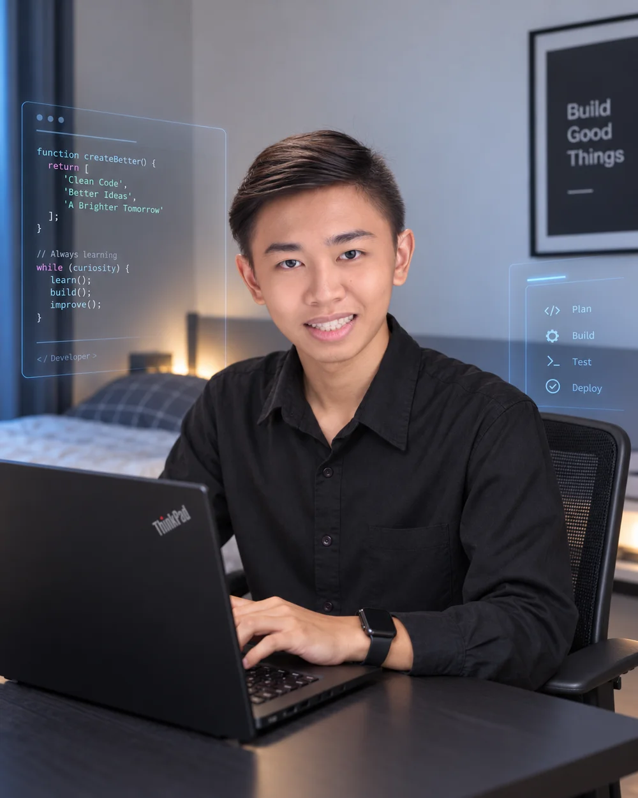

Youth Leadership Award2024 — 2025
Open to remote roles & freelance projects
JOHN DE JOYA / J0HNVEXCODER
Software.
Systems.
Connected.
Web developer & Linux infrastructure enthusiast
I build practical software and the self-hosted systems behind it. From a browser interface to a Linux server, I care about how the whole thing works.
Based in the Philippines · UTC+8Explore my infrastructure ↗
IDENTITY.NODEBUILT BY JOHN
J0hnvexcoderPhilippines / UTC+8
PRIMARY LAYERDevelopment
ACTIVE NODEpve0 / Proxmox
CURRENT STUDYInformation Security
BUILDWeb & software
OPERATELinux & servers
CONNECTNetworks & services
STUDYSecurity & testing
NOW / UPDATED SEPTEMBER 2026Building, learning, and open to useful work.
BUILDINGFirst server cluster
STUDYINGInformation security
EXPLORINGNetwork architecture
01 / SELECTED WORK
Built to solve
real problems.
Independent software, infrastructure tools, and interface experiments. Explore the collection or open a project for the details.
Explore the project lineSwipe, drag, scroll sideways, or use the arrow keys.
0106
DRAG OR SWIPEARROW KEYSSCROLL SIDEWAYS
No matching projects
Try a different search term or filter.
Ideas & work in progress
05 / IN THE PIPELINE
Currently building what comes next.
More on GitHub
11 / OPEN SOURCE
I build in public.
My repositories document how I approach software, interfaces, systems, and the problems I am learning to solve.
View GitHub profileLoading public GitHub information…
—Public repositories
—Followers
—Repository stars
02 / HOMELAB
The infrastructure
behind the interface.
I built pve0 to understand virtualization, deployment, storage, monitoring, backups, and how services communicate as one environment.
pve0HOMELAB CONTROL PLANE
PROXMOX VELAB DIAGRAMHOSTLenovo ThinkCentre M710q
PROCESSORIntel Core i5-7500
MEMORY16 GB DDR4
STORAGE2 TB SSD
BACKUPTrueNAS
SELECTED NODE
pve0 · Proxmox VE
A Lenovo ThinkCentre M710q hosting the virtual machines in this lab. The environment is used to learn virtualization, deployment, monitoring, storage, and backups.
Documented configuration · illustrative connections, not live telemetryDEPLOYED SERVICESSELF-HOSTED
JellyfinUptime KumaMovieFlixHomeLab-OSPlexAdGuard HomeNFSLibrePhotosHome AssistantHomeLab Agent
03 / ABOUT
Curiosity, put
into practice.

JOHN DE JOYA · J0HNVEXCODERI’m a web developer and IT enthusiast with a strong interest in Linux, servers, networking, hardware, homelab infrastructure, and cybersecurity.
My path into technology did not begin with a traditional computer science degree. It began with curiosity about how software, websites, networks, and security work. I learned through self-study, experimentation, and projects that solve real problems.
I’m currently building my first server cluster, studying network architecture and service communication, and developing practical information security and penetration testing skills.
“If it works, I ask how it can work better.”
ReliableUsefulSecurePractical
MILESTONESAchievements & qualifications
Bachelor of Science in Hospitality Management2024 — 2025
NC II Bartending2023
NC II Bread and Pastry2024
Away from the keyboard: DJing, EDM and music production, cooking, family, and quiet time.
04 / EXPERIENCE
Learning through
real responsibility.
My experience combines workplace IT responsibilities with sustained hands-on work in software and infrastructure.
IT / Web Developer
Telework
IT and web development role.
IT · Full-time
Hospitality / IT Environment
Computer configuration, networking, room access point setup, troubleshooting, and basic infrastructure support.
IT
Hundredfold Digital
IT role focused on supporting the organization’s technical environment.
05 / TOOLKIT
Tools with a
purpose.
Technologies applied across my software projects, websites, and home infrastructure.
What I can help with
02 / CAPABILITIES
One technical practice.
Four connected layers.
I work across the surface people use and the systems that keep it running.
01
Development
Responsive websites, frontend and backend work, Python tools, automation, and command-line utilities.
- Web & full stack
- Python & automation
- CLI tooling
02
Infrastructure
Hands-on Linux administration, containers, virtualization, self-hosting, and practical server operations.
- Linux & Docker
- Proxmox & virtualization
- Self-hosted services
03
Network & Security
Networking fundamentals, monitoring, technical support, and ongoing information security studies.
- Network architecture
- System monitoring
- Security learning
04
Web Ecosystem
Professional interfaces and maintainable websites shaped around usability, performance, and clear business goals.
- UI / UX
- WordPress
- Technical support
My development environment
07 / MY ENVIRONMENT
The systems behind the work.
Tools chosen for practical development, deployment, and learning.
Operating systems
Linux · Fedora · Debian · Ubuntu · Windows · Proxmox VE · Kali Linux
Development
VS Code · Git · GitHub · OpenCode · Docker · Bash
Infrastructure
Proxmox · Docker Compose · Nginx · Uptime Kuma · Plex
Networking
Tailscale · AdGuard Home · NFS · service monitoring
06 / WORK WITH ME
From the website
to the server.
Focused work shaped around the actual problem, without unnecessary complexity.
Web Development
Responsive websites, landing pages, portfolios, business sites, and WordPress work built for usability and maintainability.
Discuss a websiteMaintenance & Automation
Website updates, troubleshooting, performance improvements, and Python tools that reduce repetitive work.
Improve a workflowInfrastructure & Deployment
Linux server setup, Docker deployment, homelab guidance, monitoring, and self-hosted service configuration.
Plan a deploymentTechnical Support
Troubleshooting for computers, websites, Linux environments, and basic networking, plus custom technical requests.
Ask for support07 / CONTACT
Have something
in mind?
Whether you have a website idea, software project, infrastructure challenge, open-source collaboration, or simply want to talk technology, feel free to reach out.
EMAILjohnangelodejoya@gmail.comWHATSAPP+63 933 104 5271GITHUBgithub.com/johnvexcoderX / TWITTER@johnvexcoderTELEGRAM@j0hnvexcoder
Email is the easiest way to start. Tell me what you are building, where you need help, and your timeframe.